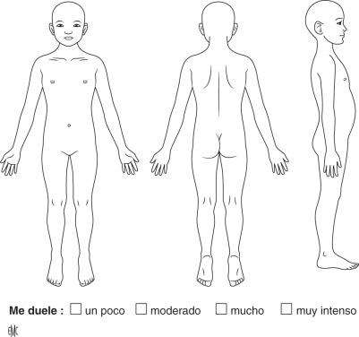

Ayudemos a entender cómo te sientes hoy
Esta herramienta está diseñada para ayudar a evaluar el dolor en niños de manera profesional y amigable. Los resultados proporcionarán información valiosa para el equipo médico.
Toca sobre la imagen en la zona donde el niño/a siente dolor. Puedes marcar hasta 4 localizaciones diferentes.

Selecciona las características que mejor describen este dolor:
Como latidos o martillazos
Como si algo apretara o presionara
Como descargas eléctricas o calambres
Como hormigas caminando o adormecimiento
Como si quemara o ardiera
Como pinchazos o puñaladas
Dolor constante y profundo